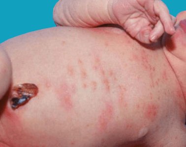
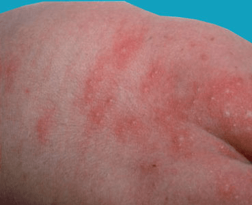

What is Erythema Toxicum Neonatorum?
Erythema toxicum neonatorum (also known as toxic erythema of the newborn)
is a harmless red rash that appears on the skin of newborns. This rash goes
away on its own and has no symptoms. It has often been likened to the
appearance of a fleabite on the skin. Erythema toxicum is an extremely
common rash that does not require any treatment, as it will spontaneously
go away in 5–7 days. The cause of this rash is unknown.

Approximately 50% of full-term newborns develop erythema toxicum shortly
after birth, most commonly seen on the second day of life. Preterm infants
are less commonly affected; however, they may develop erythema toxicum at a
week of life. It is also uncommon in infants who weight less than 5.5
pounds at birth. The rash does not appear to be seen more often in any
particular sex or race.

Erythema toxicum appears as small (1–3 mm), firm, yellow or white raised bumps
filled with pus on top of a red area of skin. There may be a few to many lesions,
and they may be found on any area of the body, with the exception of palms and
soles. Erythema toxicum often begins on the face and spreads, and it may be
clustered in areas where there is pressure on the skin. Although it most frequently
appears during the first 3–4 days of life, erythema toxicum can be seen at birth
and may not be present until 10 days of life. New lesions may appear as older
ones resolve.
There is nothing that needs to be done for this rash; it will resolve
in a few days to a week. Do not pop the pus-filled bumps, as irritating
the rash may lead to an infection.
Because erythema toxicum occurs similar to many infectious disease rashes,
including those caused by the herpes virus or other bacteria or fungi,
if you are unsure, you should consult your infant's pediatrician immediately.
Your child's pediatrician will likely not prescribe any medication for this
skin condition. If the pediatrician is not certain about the diagnosis, he/she
may take a sample of pus from the lesions and look at the cells under a microscope.
This helps in making the diagnosis. Furthermore, a blood test to look for a
certain population of cells (eosinophils) may aid in the diagnosis, although
this is not a confirming test and not commonly done.